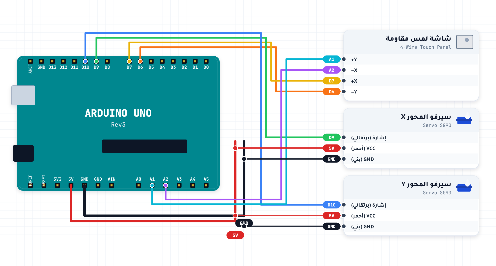

▶فيديو الشرح
شاشة لمس تعرف موقع الكرة، ومتحكم PID يميل اللوح بمحركين حتى تستقر الكرة في المنتصف.
1المكونات
ARDUINO UNOboardشاشة لمس مقاومة4-Wire Touch Panelسيرفو المحور XServo SG90سيرفو المحور YServo SG90أسلاك توصيلJumper Wiresلوحة تجاربBreadboard
2مخطط التوصيل

اضغط على المخطط لتكبيره · نسخة SVG عالية الدقة
| القطعة | الطرف | يوصل إلى |
|---|---|---|
| شاشة لمس مقاومة | Y+ | A1 |
| شاشة لمس مقاومة | X− | A2 |
| شاشة لمس مقاومة | X+ | D7 |
| شاشة لمس مقاومة | Y− | D6 |
| سيرفو المحور X | إشارة (برتقالي) | D9 |
| سيرفو المحور X | VCC (أحمر) | 5V |
| سيرفو المحور X | GND (بني) | GND |
| سيرفو المحور Y | إشارة (برتقالي) | D10 |
| سيرفو المحور Y | VCC (أحمر) | 5V |
| سيرفو المحور Y | GND (بني) | GND |
3الكود
المكتبات المطلوبة (من Arduino IDE ← Sketch ← Include Library ← Manage Libraries):
- Servo (مدمجة مع Arduino IDE)
- Adafruit TouchScreen
/* المستوى المتطور — المشروع 2: نظام موازنة الكرة الذكي ثنائي المحور (PID Ball & Plate) كتاب: 38 مشروع في شهر — لؤي النصري (@robotlouay) المكتبة: "Adafruit TouchScreen" التوصيل (شاشة لمس مقاومة 4 أسلاك): Y+ → A1 X− → A2 X+ → Pin 7 Y− → Pin 6 (Y+ و X− يجب أن يكونا منافذ تماثلية) سيرفو المحور X → Pin 9 سيرفو المحور Y → Pin 10 تغذية السيرفوهات: مصدر خارجي 5–6V + توحيد GND المعايرة: افتح Serial Monitor (115200)، حرّك الكرة إلى الحواف وسجّل أقل وأعلى قراءة لكل محور، ثم عدّل X_MIN..Y_MAX. بعدها اضبط Kp ثم Kd ثم Ki. */ #include <TouchScreen.h> #include <Servo.h> #define YP A1 // يجب أن يكون تماثلياً #define XM A2 // يجب أن يكون تماثلياً #define XP 7 #define YM 6 TouchScreen ts(XP, YP, XM, YM, 300); Servo servoX, servoY; const int X_CENTER_ANGLE = 90, Y_CENTER_ANGLE = 90; // الزاوية التي يكون فيها اللوح مستوياً const int TILT_LIMIT = 20; // أقصى ميلان ± درجة const int X_MIN = 100, X_MAX = 920, Y_MIN = 90, Y_MAX = 930; // حدود القراءة (بعد المعايرة) // معاملات PID (نقطة بداية جيدة) float Kp = 0.045, Ki = 0.0008, Kd = 0.025; float setX = 0, setY = 0; // الهدف: مركز اللوح (بالمليمتر النسبي) float iX = 0, iY = 0, lastErrX = 0, lastErrY = 0; float fx = 0, fy = 0; // موقع مُرشَّح unsigned long lastT = 0, lastSeen = 0; float pid(float err, float &integral, float &lastErr, float dt) { integral += err * dt; integral = constrain(integral, -2000, 2000); // منع التراكم الزائد float derivative = (err - lastErr) / dt; lastErr = err; return Kp * err + Ki * integral + Kd * derivative; } void setup() { Serial.begin(115200); servoX.attach(9); servoY.attach(10); servoX.write(X_CENTER_ANGLE); servoY.write(Y_CENTER_ANGLE); lastT = millis(); } void loop() { TSPoint p = ts.getPoint(); pinMode(XM, OUTPUT); pinMode(YP, OUTPUT); // إرجاع المنافذ بعد القراءة unsigned long now = millis(); if (now - lastT < 20) return; // حلقة تحكم 50 مرة في الثانية float dt = (now - lastT) / 1000.0; lastT = now; if (p.z > 50) { // الكرة على اللوح lastSeen = now; float x = map(p.x, X_MIN, X_MAX, -100, 100); // -100..100 من المركز float y = map(p.y, Y_MIN, Y_MAX, -100, 100); fx = 0.6 * fx + 0.4 * x; // ترشيح بسيط للتشويش fy = 0.6 * fy + 0.4 * y; float outX = pid(setX - fx, iX, lastErrX, dt) * 10; float outY = pid(setY - fy, iY, lastErrY, dt) * 10; servoX.write(X_CENTER_ANGLE + constrain(outX, -TILT_LIMIT, TILT_LIMIT)); servoY.write(Y_CENTER_ANGLE + constrain(outY, -TILT_LIMIT, TILT_LIMIT)); Serial.print(fx); Serial.print('\t'); Serial.println(fy); // للرسم في Serial Plotter } else if (now - lastSeen > 500) { // لا توجد كرة → لوح مستوٍ servoX.write(X_CENTER_ANGLE); servoY.write(Y_CENTER_ANGLE); iX = iY = 0; } }
هذا المشروع يعتمد على مكتبات أو لوحات غير متوفرة في mBlock 5، لذلك نستعمل Arduino IDE. انسخ الكود من تبويب Arduino IDE.
4كيف يعمل؟
- شاشة اللمس تعطي إحداثيات الكرة X و Y
- الخطأ = الهدف − الموقع
- PID يحسب الميلان المناسب
- السيرفوهان يصححان 50 مرة في الثانية
⚠ قبل توصيل الكهرباء: راجع كل سلك مع الجدول أعلاه، وتأكد من عدم وجود تماس بين 5V و GND. اختر اللوحة والمنفذ الصحيحين من قائمة Tools في Arduino IDE.